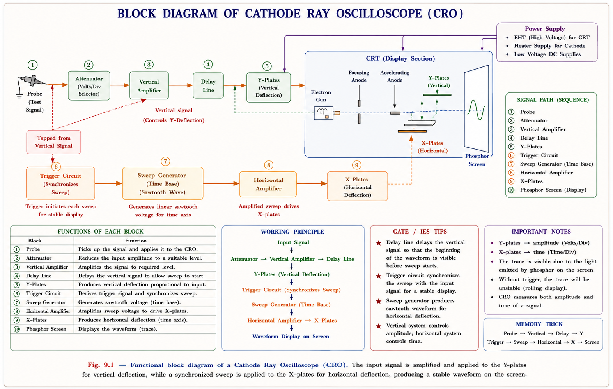
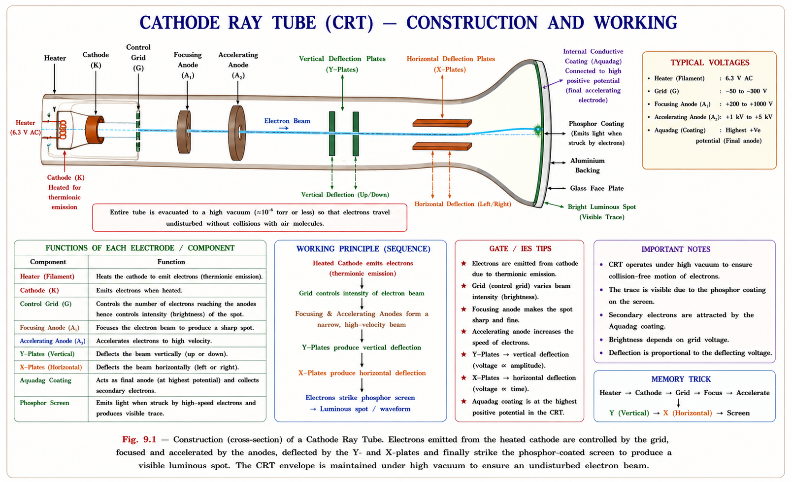
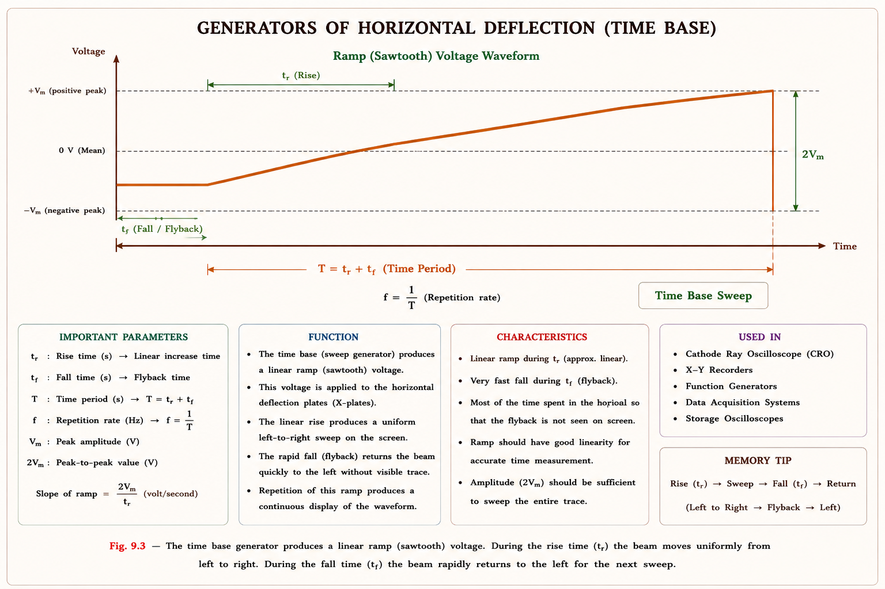
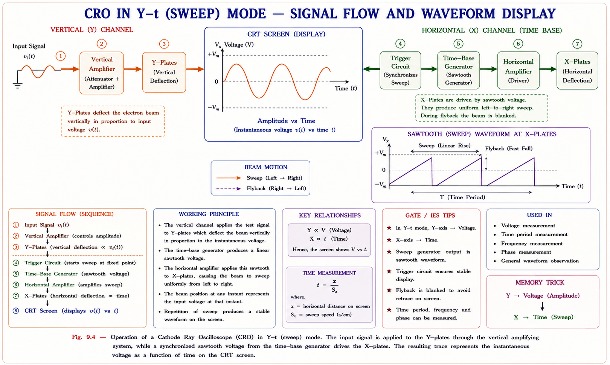
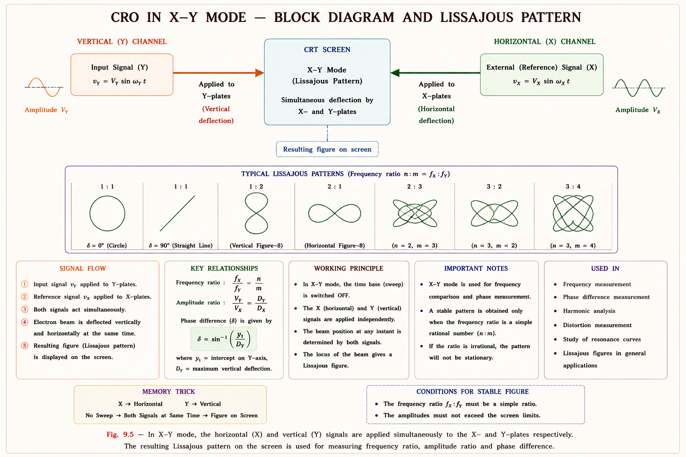
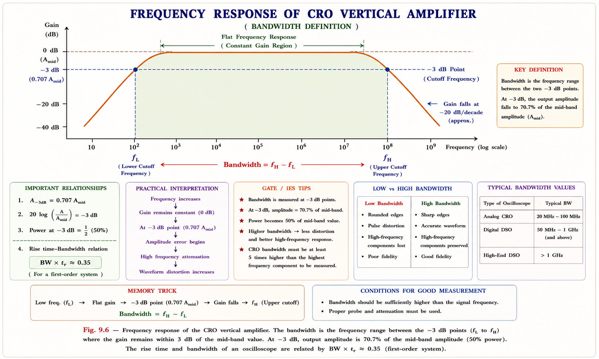
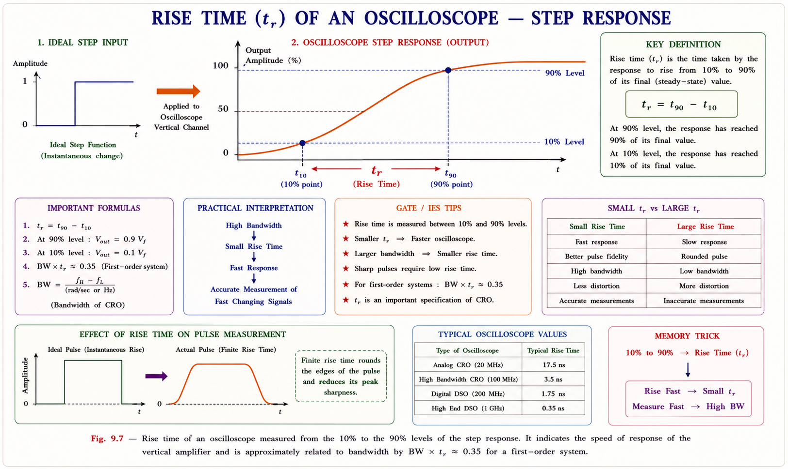
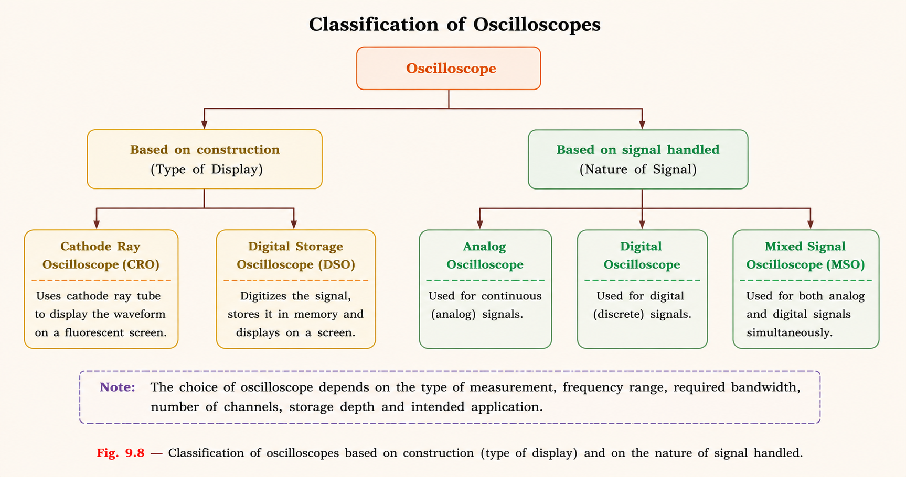

Construction and working of the CRT, deflection sensitivity, sweep and X-Y modes of operation, oscilloscope specifications — sensitivity, bandwidth, rise time — and the different types of oscilloscopes, with complete derivations and GATE/IES exam-oriented coverage.
A digital multimeter can tell you that a signal has an RMS value of 5 V — but it cannot tell you what the signal looks like. Is it a sine wave, a square wave, a noisy DC level, or a pulse with a slow rise time? Every meter collapses a time-varying signal into a single number, throwing away the most important information: how the voltage changes with time.
The Cathode Ray Oscilloscope (CRO) solves exactly this problem. It is an electronic instrument that plots the instantaneous voltage of a signal versus time on a fluorescent screen, giving the engineer a complete visual picture of the waveform. From this single picture, an engineer can directly read off the peak voltage, peak-to-peak voltage, frequency, time period, phase difference, rise time, duty cycle, and — just as importantly — spot distortion, noise, glitches, and ringing that a meter would never reveal.
Meters answer "how much?" The oscilloscope answers "how much, when, and in what shape?" This is why the CRO is often called the most versatile and indispensable instrument on an electronics workbench — it is the "eye" through which an engineer sees electrical signals.
| Feature | Voltmeter / Multimeter | Cathode Ray Oscilloscope |
|---|---|---|
| Information displayed | Single number (RMS / peak / average) | Full v(t) waveform |
| Frequency, phase, rise time | Cannot measure directly | Read directly from screen |
| Input impedance | Moderate (kΩ–MΩ) | Very high, typically 1 MΩ ‖ ~20 pF |
| Accuracy | High | Moderate — meant for waveform viewing, not precision measurement |
| Frequency range | Limited (typically up to a few kHz) | DC to hundreds of MHz / GHz |
The heart of an analog oscilloscope is the Cathode Ray Tube (CRT) — an evacuated glass envelope containing an electron gun, a pair of deflecting-plate assemblies, and a phosphor-coated screen. The other blocks of the instrument exist purely to prepare and route signals to this tube.


| Block | Function |
|---|---|
| Electron Gun (Cathode, Grid, Anodes) | Generates a stream of electrons (thermionic emission from the heated cathode), controls beam intensity (grid, acting like a control valve), and accelerates + focuses electrons into a narrow beam using high-voltage anodes. |
| Vertical (Y) Deflection Plates | A pair of horizontal plates, one above and one below the beam. The input signal (after attenuation/amplification) is applied here, deflecting the beam up or down proportional to instantaneous voltage. |
| Horizontal (X) Deflection Plates | A pair of vertical plates, one on each side of the beam. A linearly rising "sawtooth" sweep voltage from the time-base generator is applied here, sweeping the beam left to right at a constant rate, providing the time axis. |
| Trigger Circuit | Synchronises the start of each horizontal sweep with a chosen reference point on the input waveform so that the displayed pattern appears stationary instead of drifting. |
| Phosphor Screen | Coated on the inside of the tube face with a fluorescent material that glows where the electron beam strikes it, leaving a visible trace of the beam's path. |
Q1. What if the tube were not evacuated? — Electrons would collide with air
molecules, scattering the beam and reducing brightness; the gas would also ionise and
possibly damage the cathode.
Q2. What if the grid voltage is made more negative? — Fewer electrons pass
through per second, so the beam current falls and the spot becomes dimmer — this is
the "intensity" or brightness control.
Q3. What if both Y-plates are at the same potential? — No vertical
deflection; the beam travels straight, producing a horizontal line (when swept) or a dot (when
not swept).
When a voltage is applied between a pair of deflection plates, the resulting electric field exerts a force on the moving electron beam, deflecting it toward the positive plate. The amount of deflection on the screen, for a given deflecting voltage, is what we call the deflection sensitivity of the CRT — and it is a direct measure of how "sensitive" the display is to small input signals.

An electron of charge magnitude e and mass m, accelerated through anode potential Va, gains kinetic energy equal to the work done by the field:
Inside the plates (length l, separation d), a deflecting voltage Vd produces a uniform field E = Vd/d, giving the electron a transverse acceleration a = eE/m. The electron spends a time t = l/v₀ inside the field, acquiring a vertical velocity and a vertical displacement at the plate exit:
After leaving the plates, the electron travels in a straight line (no further field) to the screen, a distance L from the centre of the plates. The additional deflection over this straight path, added to the deflection already acquired inside the plates, gives the total deflection D on the screen:
The deflection sensitivity S is defined as the deflection produced per unit deflecting voltage:
The reciprocal of sensitivity, called the deflection factor G (in V/m or V/cm), tells us how many volts are needed to produce one unit of deflection — this is closely related to the practical VOLTS/DIV setting on a real oscilloscope.
| Symbol | Meaning | Effect on Sensitivity S if it ↑ |
|---|---|---|
| L | Distance from plate centre to screen | S ↑ (more room to deflect) |
| l | Length of deflecting plates | S ↑ (longer time inside field) |
| d | Separation between plates | S ↓ (weaker field for same V_d) |
| \(V_a\) | Accelerating (anode) voltage | S ↓ (faster electrons spend less time being deflected) |
Increasing \(V_a\) gives electrons more energy → brighter spot and faster writing speed (good for high-frequency signals), but it reduces deflection sensitivity (the same input voltage now produces a smaller trace). Real CROs resolve this conflict using a post-deflection acceleration (PDA) structure: electrons are accelerated to a high speed only after deflection, giving both high sensitivity and high brightness.
Q1. What if d → 0? Mathematically S → ∞ (infinitely sensitive), but
physically the plates would short the beam — practical designs keep d just large enough to
avoid the beam striking the plates at maximum deflection.
Q2. What if V_d = 0? No transverse field → D = 0 → the beam travels straight
through, producing a single bright spot at the centre.
Q3. What does an engineer observe when \(V_a\) is increased (intensity knob)?
The spot becomes brighter and can follow faster signals, but the same input now produces a
visibly smaller deflection on screen.
The sweep mode is the normal mode of operation for a general-purpose oscilloscope. Here, the horizontal (X) deflection is generated internally by a time-base generator that produces a sawtooth voltage — rising linearly with time and then rapidly resetting (the "flyback"). The vertical (Y) deflection is driven by the input test signal. The result is a plot of signal amplitude vs time, i.e. a Y–t plot.

If the sweep simply restarted at a fixed time interval unrelated to the input, each new sweep would start at a different point on the (periodic) input waveform, and the trace would appear to drift sideways. The trigger circuit forces every new sweep to begin at the same point on the waveform (e.g., the rising edge crossing 0 V), so successive sweeps overlay perfectly and the display appears stationary — this is the principle behind "edge triggering."
In X-Y mode, the internal time-base is switched off. Instead, two external signals are applied — one to the Y-plates and another to the X-plates. The resulting trace plots one signal against the other, rather than against time. When both signals are sinusoidal and related in frequency, the trace forms a closed pattern called a Lissajous figure.

When two sinusoids of equal frequency but phase difference ϕ are applied to X and Y, the trace is generally an ellipse. The phase angle can be extracted from the ellipse's intercepts:
where Ymax and Xmax are the maximum vertical/horizontal extents of the ellipse, and y₀, x₀ are the intercepts on the Y and X axes respectively (where the ellipse crosses x = 0 or y = 0). A circle (ϕ = 90°) and a straight line (ϕ = 0° or 180°) are the two extreme cases.
When the X and Y signals have different (commensurate) frequencies, the pattern becomes a more complex closed figure. The ratio of frequencies equals the ratio of the number of times the pattern touches a horizontal line to the number of times it touches a vertical line:
By feeding an unknown frequency to one channel and a known, variable reference frequency to the other, the reference is tuned until a stationary closed pattern appears. The unknown frequency is then computed using the tangency ratio above — a classic pre-digital frequency measurement technique still asked about conceptually in exams.
The VOLTS/DIV control sets the vertical scale of the display — it defines how many volts of input correspond to one division (typically 1 cm) of screen deflection. A series of calibrated attenuators and pre-amplifiers at the input allow this setting to span from a few millivolts/div to tens of volts/div, letting the same oscilloscope measure both tiny and large signals accurately.
The bandwidth of an oscilloscope is the range of frequencies over which the vertical amplifier's gain stays within −3 dB of its mid-band (low-frequency) value. Beyond this frequency, the displayed amplitude of a sine wave progressively shrinks even though the actual input amplitude is unchanged — so the oscilloscope under-reports the signal.

Even below the −3 dB point, the amplifier response is not perfectly flat. For reasonably accurate amplitude measurements (error within a few percent), the oscilloscope should only be used up to about 0.3 times its rated bandwidth. For example, a 100 MHz scope with ±2% rated inaccuracy may show roughly ±5% error at 30 MHz and progressively larger errors closer to 100 MHz.
Rise time (tr) is defined as the time taken for the displayed response to go from 10% to 90% of its final value when a fast step voltage is applied to the input. A finite rise time means the oscilloscope itself "rounds off" sharp edges — if the scope's own rise time is too slow, a genuinely fast edge on the input will appear artificially slow on screen.

For an amplifier whose frequency response behaves like a single-pole low-pass filter, bandwidth and rise time are related by a simple, widely used approximate relation:
For example, an oscilloscope with a bandwidth of 100 MHz has a rise time of approximately:
To measure a signal's rise time accurately, the oscilloscope's own rise time must be much smaller than the signal's rise time — a common guideline is that the scope's rise time should be at most about one-third to one-fifth of the rise time being measured, otherwise the measured value is dominated by the instrument itself, not the signal.
Q1. What if bandwidth increases? Rise time decreases proportionally
(\(BW \cdot t_r = \text{constant}\)) — the scope can faithfully display faster edges.
Q2. What if the input frequency exceeds the bandwidth? The displayed
amplitude is attenuated (rolled off) below the true value — amplitude readings become
unreliable.
Q3. What does an engineer observe with a DC-coupled amplifier? DC and very
low frequencies are amplified by the same factor as the mid-band — minimum measurable
frequency is zero, and bandwidth equals the upper −3 dB frequency.
Oscilloscopes are broadly classified into analog and digital types. Digital oscilloscopes are further divided based on how they acquire, process, and display the waveform.

| Type | Working Principle | Key Strength |
|---|---|---|
| Analog Oscilloscope | Input signal directly drives the Y-plates of a CRT; the beam traces the waveform in real time on the phosphor screen. | Simple, no quantisation — true real-time display with no processing delay |
| Digital Storage Oscilloscope (DSO) | An ADC samples and digitises the input; samples are stored in memory and displayed on a raster (LCD-type) screen. | Waveform storage, cursors, automatic measurements, ability to "freeze" a one-shot event |
| Digital Phosphor Oscilloscope (DPO) | Uses a dedicated parallel-processing acquisition path to capture and display waveform "images," showing the distribution of amplitude over time in three dimensions (time, amplitude, intensity/frequency-of-occurrence). | Captures rare transient events — glitches, runt pulses, transition errors — that a standard DSO may miss between acquisitions |
| Sampling Oscilloscope | For repetitive signals whose frequency exceeds the instrument's real-time sample rate; builds up the waveform by taking one sample per cycle from successive cycles and assembling them. | Effective bandwidth far beyond real-time sampling rate — used for very high-frequency repetitive signals (bandwidths quoted up to tens of GHz), though instruments are costly |
Because the waveform is stored as digital data, a DSO can perform automatic measurements (Vpp, frequency, rise time), apply FFTs, trigger on complex conditions, and transfer data to a computer — capabilities that are difficult or impossible with a purely analog CRT-based scope.
Because the CRO directly displays v(t), it forms the basis for a very wide range of measurements across electrical and electronic engineering.
Given: l = 2 cm, d = 0.5 cm, L = 20 cm, \(V_a = 2000\text{ V}\), V_d = 25 V
Deflection for V_d = 25 V:
S = 0.02 cm/V means the deflection factor G = 1/S = 50 V/cm — i.e. a 50 V signal would deflect the beam by 1 cm (1 division), which is a typical VOLTS/DIV-type figure.
Given: \(t_r = 7\text{ ns} = 7 \times 10^{-9}\text{ s}\)
Using the standard approximate relation between bandwidth and rise time:
Doubling the rise time halves the bandwidth, and vice versa — \(BW\) and \(t_r\) are inversely proportional with the constant 0.35, a relation worth memorising for direct GATE-style numerical questions.
From the derived formula, \(S = \frac{Ll}{2dV_a}\). Since \(S \propto 1/V_a\), doubling \(V_a\) halves the deflection sensitivity — the same input voltage now produces only half the previous deflection on screen.
At the same time, electrons leave the gun with higher kinetic energy (\(v_0 \propto \sqrt{V_a}\)), so they strike the phosphor with more energy, producing a brighter spot and allowing the beam to be swept faster (better high-frequency response / writing speed).
This is exactly the brightness-vs-sensitivity conflict discussed in Section 1.3 — solved in practical CRTs using post-deflection acceleration.
This section collects the concepts most frequently tested in GATE EE/IN and IES Electronics & Telecommunications around Cathode Ray Oscilloscopy.
In a CRT, if the length of the deflecting plates and the distance from the plates to the screen are both doubled, while the plate separation and accelerating voltage remain unchanged, the deflection sensitivity becomes:
Explanation: \(S = \frac{Ll}{2dV_a}\). If both L and l are doubled, S becomes \(\frac{(2L)(2l)}{2dV_a} = 4 \times \left[\frac{Ll}{2dV_a}\right] = 4S\) — sensitivity increases four-fold. This tests careful application of the derived formula rather than memorisation. 🟢 High
An oscilloscope has a bandwidth of 350 MHz. Its rise time is approximately:
Explanation: \(t_r \approx \frac{0.35}{BW} = \frac{0.35}{350\times10^6} = 1\times10^{-9}\text{ s} = 1\text{ ns}\). A frequently tested direct-substitution numerical. 🟢 High
A Lissajous pattern on a CRO screen touches a horizontal reference line 3 times and a vertical reference line 2 times during one complete pattern. If the horizontal (X) input frequency is 1 kHz, the vertical (Y) input frequency is:
Explanation: \(f_y/f_x\) = (no. of horizontal tangencies)/(no. of vertical tangencies) \(= 3/2\), so \(f_y = 1.5 \times f_x = 1.5\text{ kHz}\). 🟡 Medium
A 100 MHz oscilloscope is specified with ±2% amplitude accuracy. For reliable amplitude measurements, the maximum recommended signal frequency is closest to:
Explanation: The \(0.3 \times \text{bandwidth}\) rule of thumb gives \(0.3 \times 100\text{ MHz} = 30\text{ MHz}\) as the practical upper limit for accurate amplitude measurement. 🟡 Medium
1. Confusing deflection sensitivity (cm/V, larger is more
sensitive) with deflection factor (V/cm, larger means less sensitive) — they are
reciprocals of each other.
2. Assuming bandwidth is the frequency at which the signal "stops" being
displayed — it is only the −3 dB point; the scope still responds (with attenuation) well
beyond it.
3. Forgetting that \(S \propto 1/V_a\) — students often (incorrectly) assume a higher
accelerating voltage always "improves" the oscilloscope, ignoring the sensitivity
trade-off.
4. In Lissajous frequency-ratio questions, swapping the roles of horizontal
and vertical tangency counts.
\(S = \frac{L \cdot l}{2 \cdot d \cdot V_a}\) — remember "L and \(l\) on top (length helps), \(d\) and \(V_a\) on the bottom (these hurt sensitivity)." Anything on top of the fraction increases S; anything on the bottom decreases it.
\(BW \times t_r \approx 0.35\). Think of it as a fixed "budget" shared between bandwidth and rise time — if one goes up, the other must come down to keep the product near 0.35.
Have a question on CRT construction, deflection sensitivity, bandwidth, rise time, or Lissajous figures? Type below or pick a suggestion.
Displays v(t), not just a number. Lets engineers read frequency, phase, rise time, distortion and noise directly from the screen — meters cannot do this.
Electron gun (cathode, grid, anodes) → Y-plates → X-plates → phosphor screen, all inside an evacuated tube. Grid voltage controls intensity; anode voltage controls beam velocity.
\(S = \frac{Ll}{2dV_a}\). \(S \uparrow\) with longer/farther plates; \(S \downarrow\) with larger separation or higher accelerating voltage. G = 1/S is the deflection factor (V/cm).
Sweep mode: internal sawtooth on X, signal on Y → Y-t plot. X-Y mode: both inputs external → Lissajous figures for frequency and phase measurement.
BW = frequency where gain falls 3 dB. \(t_r\) = 10%–90% step response time. \(BW \times t_r \approx 0.35\). Accurate amplitude measurement: use up to ~0.3 × BW.
Analog (real-time CRT) → DSO (sampled, stored) → DPO (parallel acquisition, waveform intensity images) → Sampling (for very high-frequency repetitive signals).
Multi-channel display techniques (dual-trace, dual-beam), probes and attenuators, signal generators, and an introduction to digital storage oscilloscope architecture — with complete GATE & IES concepts.
All technical content is derived from the following standard textbooks and learning resources. All explanations, derivations, diagrams and examples are original to Aarova AI.